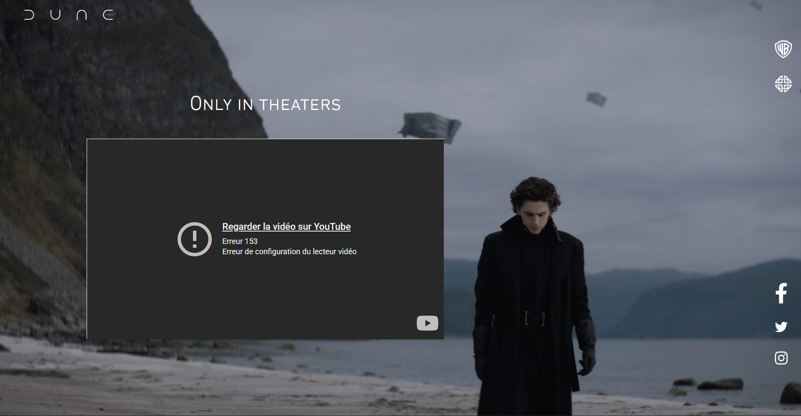
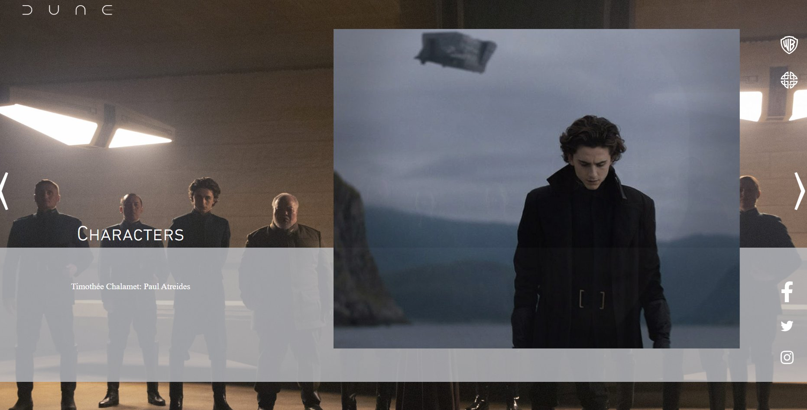
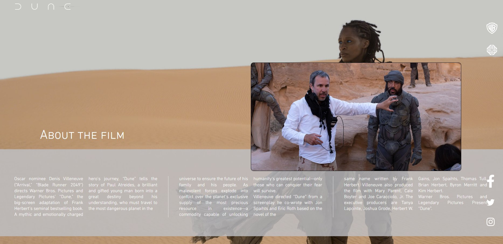
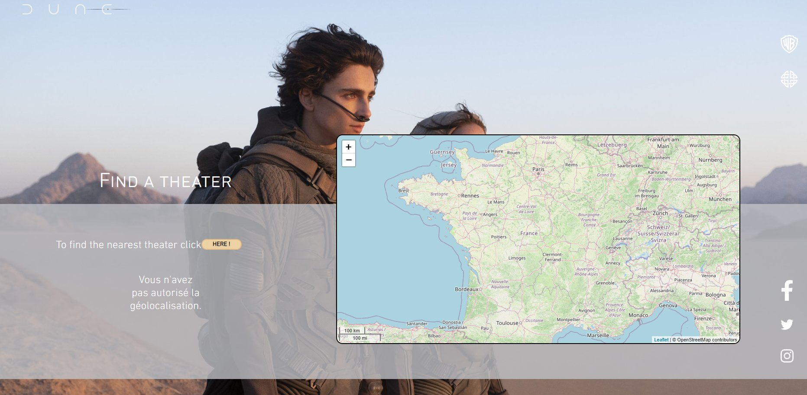

Projet 02 — Intégration web
Site Dune
Le film était imposé : on nous fournissait des captures d'écran d'un site one-page officiel de Dune, et l'objectif était de le reproduire fidèlement en code. C'est un exercice classique mais redoutable : pas de page blanche, mais une exigence de précision — chaque marge, chaque superposition d'image, chaque transition doit coller au modèle.
Restituer l'expérience complète du site sur une seule page : un hero avec vidéo, une section « About the film », un carrousel de personnages, une galerie d'images, et un module « Find a theater » avec une carte interactive. Le tout responsive et cohérent avec la direction artistique très épurée de l'univers Dune.
J'ai posé d'abord une structure HTML sémantique, puis le CSS pour reproduire la mise en page : typographie fine, blocs translucides, images en plein écran et superpositions caractéristiques du modèle. La logique responsive a été pensée dès le départ pour ne pas casser ces compositions sur mobile.

En JavaScript, j'ai géré les interactions : navigation du carrousel de personnages et de la galerie vidéos/images. La partie la plus formatrice a été le module « Find a theater » : j'ai intégré la bibliothèque Leaflet couplée à OpenStreetMap pour afficher une carte dynamique, avec une demande de géolocalisation de l'utilisateur. C'était ma première intégration d'une bibliothèque cartographique tierce dans un projet.



Le rendu reproduit le modèle de bout en bout, interactions comprises. Je me sens à l'aise sur l'intégration HTML/CSS/JS et, surtout, j'ai gagné en autonomie sur l'intégration d'une bibliothèque externe — savoir lire une doc, brancher Leaflet et le faire dialoguer avec une API du navigateur est une compétence que je réutiliserai.
Je suis en voie d'acquisition sur deux points que je veux travailler : l'accessibilité (gestion clavier des carrousels, contrastes, alternatives textuelles) et l'optimisation des médias (poids des images/vidéos, lazy-loading systématique) pour un site plus performant que le simple « ça ressemble au modèle ».